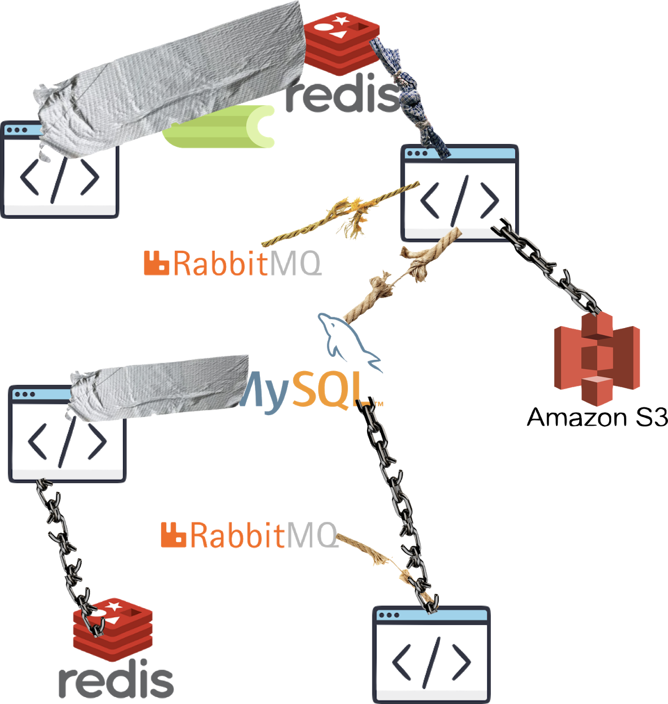

<!DOCTYPE html>
<html lang="en">
  <head>
    <meta charset="utf-8" />
    <meta name="viewport" content="width=device-width, initial-scale=1.0, maximum-scale=1.0, user-scalable=no" />

    <title>Temporal intro workshop</title>
    <meta property="og:title" content="Temporal intro workshop" />
    <meta property="og:type" content="website" />
    <meta property="og:image" content="https://sagikazarmark.github.io/temporal-intro-workshop//featured-slide.jpg" />
    <meta property="og:url" content="https://sagikazarmark.github.io/temporal-intro-workshop/" />
    <link rel="shortcut icon" href="./favicon.ico"/>
    <link rel="stylesheet" href="./dist/reveal.css" />
    <link rel="stylesheet" href="./dist/theme/sky.css" id="theme" />
    <link rel="stylesheet" href="./css/highlight/monokai.css" />

  </head>
  <body>
    <div class="reveal">
      <div class="slides"><section  data-markdown><script type="text/template">


## Intro workshop
</script></section><section  data-markdown><script type="text/template">
# Agenda

- History
- About Temporal
- Workshop preparation
- Examples
- Further reading
</script></section><section ><section data-markdown><script type="text/template">
# History
</script></section><section data-markdown><script type="text/template">
## Problem

Long running, complex interactions...

...in distributed systems. <!-- .element: class="fragment" data-fragment-index="1" -->
</script></section><section data-markdown><script type="text/template">
## Example


</script></section><section data-markdown><script type="text/template">
## Naive implementation

```go
func placeOrder(o Order) {
    warehouse.ReserveItems(o.Items)

    payment.ProcessPayment(o)

    notifyBuyer(o, OrderPlaced)

    saveOrder(o)
}
```
</script></section><section data-markdown><script type="text/template">
## Failure


</script></section><section data-markdown><script type="text/template">
## Failure modes

```go
func placeOrder(o Order) {
    reserved, err := warehouse.ReserveItems(o.Items)
    if err != nil { // Warehouse service unavailable
        // Retry?
    }

    if !reserved { // Business error requiring user intervention
        notifySeller(o, OrderFailed)
        notifyBuyer(o, OrderFailed)

        return
    }

    // ...
}
```
</script></section><section data-markdown><script type="text/template">
## Queues FTW


</script></section><section data-markdown><script type="text/template">
## Status?

- User: what's going on with my order?
- Seller: incoming orders?
</script></section><section data-markdown><script type="text/template">
## State!


</script></section><section data-markdown><script type="text/template">
## Reinventing wheels



*Source: [StackOverflow Blog](https://stackoverflow.blog/2020/11/23/the-macro-problem-with-microservices/)* <!-- .element style="font-size: 13px" -->
<!-- .element style="margin-top: -30px;" -->
</script></section><section data-markdown><script type="text/template">
## Lessons learnt

- No *one size fits all* solution (yet)
- Fragile systems
- Distributed transactions? (2PC, Saga)
- Lack of orchestration
</script></section><section data-markdown><script type="text/template">
## Lack of orchestration

- Fractured business processes
- Changes affect a lot of components
- Cancellations?
- Compensating actions?
- Additional interactions?
- Troubleshooting?
</script></section><section data-markdown><script type="text/template">
## We want this

```go
func placeOrder(o Order) {
    warehouse.ReserveItems(o.Items)

    payment.ProcessPayment(o)

    notifyBuyer(o, OrderPlaced)

    saveOrder(o)
}
```
</script></section></section><section ><section data-markdown><script type="text/template">
# About Temporal
</script></section><section data-markdown><script type="text/template">
## What is Temporal?

- Temporal service
- Temporal SDK *(insert your programming language here)*
</script></section><section data-markdown><script type="text/template">
## Orchestration as code

- Write business logic as plain code
- Orchestration framework
- Durability and fault-tolerance out-of-the-box
</script></section><section data-markdown><script type="text/template">


*Source: [Temporal docs](https://docs.temporal.io/docs/server-architecture#overview)* <!-- .element style="font-size: 13px" -->
<!-- .element style="margin-top: -30px;" -->
</script></section><section data-markdown><script type="text/template">
## Workflows

- Encapsulates business logic
- Durable function
- Only deterministic code allowed:
    - Plain code
    - Deterministic wrappers
    - Activities

**[Documentation](https://docs.temporal.io/docs/concepts/workflows)**
</script></section><section data-markdown><script type="text/template">
## Deterministic wrappers

- Timers
- Async wrappers
- Side effect
</script></section><section data-markdown><script type="text/template">
## Activities

- Custom, non-deterministic code (eg. API calls)
- Building blocks for workflows
- Asynchronously executed

**[Documentation](https://docs.temporal.io/docs/concepts/activities)**
</script></section><section data-markdown><script type="text/template">
## Workers

- Executes workflows and activities
- Listens to task queues

**[Documentation](https://docs.temporal.io/docs/concepts/workers)**
</script></section><section data-markdown><script type="text/template">

</script></section><section data-markdown><script type="text/template">
## Other notable concepts

- [**Namespace**](https://docs.temporal.io/docs/server/namespaces): unit of isolation and replication domain (analogous to a database)
- [**Task queue**](https://docs.temporal.io/docs/concepts/task-queues): routing mechanism to different kinds of workers
</script></section></section><section ><section data-markdown><script type="text/template">
# Workshop preparation
</script></section><section data-markdown><script type="text/template">
## Prepare your environment

1. Git, Make, etc.
2. Make sure you have the latest [Go](https://golang.org/) and [Docker](https://www.docker.com/get-started) installed
</script></section><section data-markdown><script type="text/template">
## Setup the project

Checkout the following repository:
[`https://github.com/sagikazarmark/temporal-intro-workshop`](https://github.com/sagikazarmark/temporal-intro-workshop)

Follow the instructions in the readme.
</script></section><section data-markdown><script type="text/template">
## Check the tools

- UI: http://127.0.0.1:8088
- CLI: `make shell`
</script></section></section><section ><section data-markdown><script type="text/template">
# Workflows
</script></section><section data-markdown><script type="text/template">
- Single unit of orchestration logic
- Write business logic as simple code
- **MUST** be deterministic
- Parameters **MUST** be serializable
</script></section><section data-markdown><script type="text/template">
## Reminder

```go
func placeOrder(o Order) {
    warehouse.ReserveItems(o.Items)

    payment.ProcessPayment(o)

    notifyBuyer(o, OrderPlaced)

    saveOrder(o)
}
```
</script></section><section data-markdown><script type="text/template">
## Example 1
</script></section><section data-markdown><script type="text/template">
## Example 2

- Input: number (integer)
- Output: factorial of the number
</script></section><section data-markdown><script type="text/template">
## Example 3
</script></section><section data-markdown><script type="text/template">
## Example 4

Write a test for Example 2.
</script></section><section data-markdown><script type="text/template">
## Determinism

> Output value is based entirely on the input.

```go
func add(a, b int) int {
    return a + b
}
```

```go
func add(a, b int) int {
    // This is not deterministic
    resp := http.Get(fmt.Sprintf("https://add.com/%d/%d", a, b))

    return decodeBody(resp.Body)
}
```
</script></section><section data-markdown><script type="text/template">
## Forbidden in Go

- Time functions `time.Now`, `time.Sleep`
- Goroutines
- Channels and selects
- Iterating over maps

Use [deterministic wrappers](https://docs.temporal.io/docs/go/workflows#how-to-write-workflow-code) instead.
</script></section><section data-markdown><script type="text/template">
## Forbidden in general

- Accessing external systems (usually over network)
</script></section><section data-markdown><script type="text/template">
## Example 5 & 6
</script></section><section data-markdown><script type="text/template">
## Workflow replay

1. Workflow is scheduled to run on a worker
1. Workflow returns with a list of **commands**
1. Temporal records the commands in the history in the form of **events** (eg. `StartTimer` -> `TimerStarted`)
1. Workflow gets scheduled again
1. Worker _replays_ the history by calling the workflow function
1. Workflow returns with a list of commands
1. ...
1. Workflow ends
</script></section><section data-markdown><script type="text/template">
## Workflow replay

```go
func Workflow(ctx workflow.Context, input Input) (Output, error) {
    encodedNumber := workflow.SideEffect(ctx, func(ctx workflow.Context) interface{} {
        return rand.Intn(max)
    })

    sum := input.Number + number

    workflow.Sleep(ctx, 1*time.Second)

    return Output{sum}, nil
}

```
</script></section><section data-markdown><script type="text/template">
## Example 7

Write a query handler (for your workflow from examples 2, 4) that returns the current result in the loop.

Add sleep at the beginning of the loop so you have time to query it using the CLI.
</script></section><section data-markdown><script type="text/template">
## Recap

- Workflows implement business logic
- Compared to queue based solutions they provide orchestration
- They **MUST** be deterministic
</script></section><section data-markdown><script type="text/template">
## Undiscussed topics

- Child workflows
- Versioning
- Reset / Cancellation
- Search attributes
- Sessions
- Cron
- ...

https://docs.temporal.io/docs/concepts/workflows

https://docs.temporal.io/docs/go/introduction

</script></section></section><section ><section data-markdown><script type="text/template">
# Activities
</script></section><section data-markdown><script type="text/template">
- Single task within a workflow
- Can be non-deterministic
- API calls, database access, etc
- Just regular code with regular tests
</script></section><section data-markdown><script type="text/template">
## Example 8 & 9
</script></section><section data-markdown><script type="text/template">
## Example 10

Rewrite the factorial calculation (based on examples 2, 4, 7) as an activity (with retries and timeouts):

- It should always fail on the first attempt
- Rewrite the tests so they continue to pass
</script></section><section data-markdown><script type="text/template">
## Undiscussed topics

- Cancellation
- Async completion
- Local activities

https://docs.temporal.io/docs/concepts/activities

https://docs.temporal.io/docs/go/introduction
</script></section></section><section ><section data-markdown><script type="text/template">
# Further reading
</script></section><section data-markdown><script type="text/template">
https://stackoverflow.blog/2020/11/23/the-macro-problem-with-microservices/
</script></section><section data-markdown><script type="text/template">
https://docs.temporal.io/docs/concepts/introduction

https://docs.temporal.io/docs/reference/glossary
</script></section><section data-markdown><script type="text/template">
https://docs.temporal.io/application-development
</script></section><section data-markdown><script type="text/template">
https://docs.temporal.io/docs/samples-library
</script></section><section data-markdown><script type="text/template">
https://docs.temporal.io/blog/tags/go-ecommerce-tutorial/
</script></section></section><section  data-markdown><script type="text/template">
# The End
</script></section></div>
    </div>

    <script src="./dist/reveal.js"></script>

    <script src="./plugin/markdown/markdown.js"></script>
    <script src="./plugin/highlight/highlight.js"></script>
    <script src="./plugin/zoom/zoom.js"></script>
    <script src="./plugin/notes/notes.js"></script>
    <script src="./plugin/math/math.js"></script>
    <script>
      function extend() {
        var target = {};
        for (var i = 0; i < arguments.length; i++) {
          var source = arguments[i];
          for (var key in source) {
            if (source.hasOwnProperty(key)) {
              target[key] = source[key];
            }
          }
        }
        return target;
      }

      // default options to init reveal.js
      var defaultOptions = {
        controls: true,
        progress: true,
        history: true,
        center: true,
        transition: 'default', // none/fade/slide/convex/concave/zoom
        plugins: [
          RevealMarkdown,
          RevealHighlight,
          RevealZoom,
          RevealNotes,
          RevealMath
        ]
      };

      // options from URL query string
      var queryOptions = Reveal().getQueryHash() || {};

      var options = extend(defaultOptions, {"controls":true,"progress":true,"history":true,"hash":true,"transition":"slide"}, queryOptions);
    </script>


    <script>
      Reveal.initialize(options);
    </script>
  </body>
</html>
